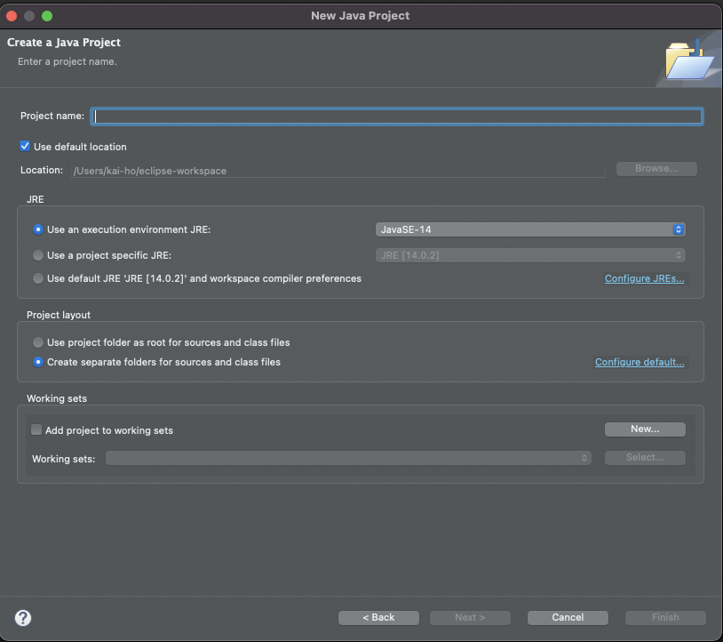

Sometimes the import from git in mac Eclipse is bug.
Try the following fix.
In the middle of import, we will be creating a new project.

Unselect "Use default location."
Browse and select the location to the downloaded git folder
Next and finish the new project.
Remember to import necessary jar.
This guideline is to setup GitHub to commit/pull in Eclipse.
Token is required since August 13, 2021. Login Github using account & password in Eclipse is no longer supported.[1]
Create a personal token follow the steps here: [2] Note that each token only appear once and cannot be retrieved again. Re-generation is needed to setup each time.
Reset in Eclipse [3]
Go to the Window -> Git Perspective -> Expand your Project -> Expand Remotes -> Expand the remote you want to save your password.
Right-click on the Fetch or Push -> Select "Change Credentials..."